Introducción
Qué hace QCalc
QCalc es una calculadora donde escribes una expresión como lo harías en papel y obtienes el resultado al momento. Los cálculos los hace libqalculate, el motor de la calculadora de escritorio Qalculate!.
- De la aritmética a fracciones, raíces, unidades, monedas, derivadas, integrales, ecuaciones y matrices, todo en una línea.
- Cuando puede, el resultado es exacto (√2, π/2, 7/12), con su aproximación decimal al lado.
- Los cálculos de cada día, como precios, préstamos, fechas, conversiones, estadística y tanques, están en «Herramientas»: escribe los números y aparece el resultado.
- Gráficas 2D y 3D, con áreas, longitudes y volúmenes de sólidos de revolución.
- QCalc no recoge datos personales. Solo usa internet para descargar los tipos de cambio.
Los resultados son orientativos. No los uses donde no se admiten errores, como el comercio o la certificación, el diseño y la construcción o la declaración de impuestos (advertencias).
Tus tres primeros cálculos
Qué hace Escribe una expresión con las teclas y pulsa =: el resultado pasa al historial. Mientras escribes, el resultado ya aparece bajo el campo de entrada.
- Abre la app y escribe
2 + 3 × 4con las teclas. Bajo el campo aparece «= 14». - Pulsa =. La expresión y «= 14» pasan al historial y el campo queda vacío.
- Ahora escribe
60 mph to km/h(«to» está en la tecla →). Aparece «≈ 96.56064 km/h». - El tercero es
sqrt(2), también con la tecla √: «= √2 ≈ 1.414213562», el valor exacto y la aproximación.
1/3 + 1/4 → = 7/12 ≈ 0.5833333333
Toca un resultado del historial para ponerlo en el campo de entrada o copiarlo.
- La letra x es una variable, no «por». Multiplica con la tecla × (o *).
Novedades de 1.13.0
- Cifras mostradas en cada herramienta: cada herramienta muestra sus resultados con su propio número de cifras. Abre Cifras mostradas… desde ⋯ a la derecha del título de la herramienta (Cifras mostradas en cada herramienta).
- Tres formas de elegir: Recomendado (automático), Cifras significativas o Decimales; el número se ajusta con + y −.
- Ceros finales: con las cifras elegidas, Mantener (2,50) o Quitar (2,5).
- Una marca: una herramienta que no usa sus cifras predeterminadas lleva la marca «cambiado» en ⋯ → Cifras mostradas… y en la lista de los ajustes.
- Volver a lo predeterminado: Volver al valor predeterminado (recomendado) para una herramienta; Todo al valor predeterminado (recomendado) en Cifras mostradas en cada herramienta de los ajustes, para todas.
- Dinero: las cantidades de dinero llevan los decimales de la moneda de la región del teléfono (ninguno para el yen, dos para el euro y el dólar). Decide la región, no el idioma (euros en un teléfono en Alemania, en cualquier idioma).
Novedades de 1.12.0
- Más claro: el menú tiene ocho opciones y las herramientas están juntas en Herramientas. En cada herramienta, toca un ejemplo para rellenarla; el resultado aparece al momento.
- Herramientas cotidianas: Precio: descuento e impuesto, Porcentajes, Precio unitario: cuál es más barato, Dividir la cuenta, Préstamo, Ahorro e interés compuesto, Fechas, Tiempos, Convertir unidades y monedas, Estadística, Notas de cálculo.
- Formato de números: elige 1,234.5, 1.234,5 o 1 234,5 (Formato de números).
- Historial: búsqueda, fijar con estrella, notas breves, suma de las líneas elegidas; teclas de memoria (Historial y memoria).
- De 2D a 3D: ⟳ 3D convierte al momento una región de la gráfica en un sólido de revolución y lo muestra en 3D (3D: QCalc Pro); también sólidos de sección conocida, las líneas del método y el teorema de Pappus (Crear un sólido).
- Abrir rápido: un widget, un mosaico de ajustes rápidos y accesos directos en el icono (Widget, mosaico y accesos directos).
- Compartir: imágenes de gráficas y GIF animados de las gráficas 3D (Compartir).
- Sólidos y depósitos en 3D: ⟳ 3D, arriba a la izquierda del dibujo en Cuerpos y Depósitos, muestra la figura en 3D con las medidas escritas; en un depósito se puede arrastrar el nivel para ver la cantidad (Sólidos y depósitos en 3D; 3D es QCalc Pro).
- Cifras de los resultados: las cifras de los resultados de Figuras, Depósitos y similares, como decimales o cifras significativas, por tipo de magnitud, con el redondeo; todo % tiene un decimal al principio (Cifras mostradas en cada herramienta).
- QCalc Pro: CSV de tablas, fondos de tanques con tablas de consulta, sólidos a partir de un perfil, archivos STL, más notas de cálculo y más (QCalc Pro).
- Este manual: está dentro de la app. El «?» arriba a la derecha de una herramienta o panel abre su sección.
Ejemplos y consejos en la app
Qué hace Ejemplos y consejos en el menú tiene expresiones que pasan al campo de entrada con un toque, y consejos. Manual de uso arriba del todo abre este manual.
- Pulsa ☰ arriba a la izquierda y elige Ejemplos y consejos.
- Toca una expresión. El panel se cierra y la expresión queda en el campo.
- Pulsa = para calcularla.
Este manual se lee sin internet. La versión detallada con fotos (web) y el PDF se abren con los enlaces de arriba.
La pantalla
| N.º | Nombre | Para qué sirve |
|---|---|---|
| 1 | ☰ (menú) | Abre las herramientas, las gráficas, las listas, los ajustes y más |
| 2 | Botones | Cambian con un toque la unidad de ángulo (RAD, DEG), exacto o aproximado, decimal o hexadecimal |
| 3 | 🕘 (menú del historial) | Buscar en el historial, elegir líneas, exportar, borrar |
| 4 | Historial | Las expresiones y sus resultados, la más nueva abajo |
| 5 | Campo de entrada | Donde escribes; debajo, el resultado mientras escribes (la vista previa) |
| 6 | Páginas de teclas | Cambian entre las cuatro páginas 123, Funciones, Cálculo y Matriz |
| 7 | Teclas | Dígitos, operadores y funciones |
| 8 | Tecla = | Calcula y guarda la expresión y el resultado en el historial |
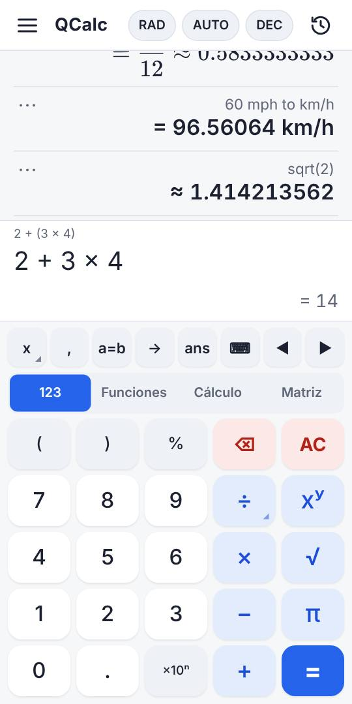
En un teléfono con texto grande, la fila superior de teclas (x, ans, flechas, ⌨) está oculta. ⌨ al final de las pestañas la muestra.
Cálculos básicos
Escribir una expresión
Qué hace Escribe la expresión como la escribe un libro de matemáticas, con las teclas o, tras ⌨, con el teclado del teléfono.
- Escribe la expresión con las teclas de dígitos y operadores. Los paréntesis están en las teclas ( ).
- Una tecla de la página Funciones (sin, log, √ y otras) escribe «sin(» y similares.
- Las unidades y monedas se escriben por su nombre (
5 km,100 USD). Para convertir, usa «to» (5 km to mi). - Pulsa = para calcular.
2^10 → = 1024, 5! → = 120, sin(30°) → = 1/2
÷ × + y similares en un campo vacío continúan desde el último resultado, «ans».
- Los paréntesis que no se emparejan dan un error. El mensaje dice qué corregir.
Leer el resultado: exacto, aproximado, fracciones
Qué hace Un resultado que empieza por «=» es exacto; uno que empieza por «≈» es aproximado. Los resultados con fracciones o √ muestran también el decimal.
1/3 + 1/4→= 7/12 ≈ 0.5833333333(la fracción se mantiene, con su decimal)sqrt(8)→= 2√2 ≈ 2.828427125pi × 2→= 2π ≈ 6.283185307
- El botón de arriba cambia entre exacto, aproximado y automático.
- El número de cifras es Precisión (cifras significativas) en Ajustes (10 por defecto).
Pro Es una función de QCalc Pro. Hasta 1000 cifras es gratis. Más de 1000, hasta 200000 cifras, es una función de QCalc Pro.
Un resultado muy largo se desplaza en el historial para leer todas las cifras; al copiarlo se copian todas.
Borrar y deshacer
Qué hace ⌫ borra un carácter, AC vacía el campo de entrada. Justo después, Deshacer sobre el campo lo recupera.
- ⌫ borra el carácter antes del cursor; mantenlo pulsado para seguir borrando.
- AC vacía el campo y aparece Deshacer encima.
- Deshacer recupera la expresión.
Una línea borrada del historial también se recupera durante unos segundos con Deshacer abajo en la pantalla.
Formato de números: el separador decimal
Qué hace Elige si el separador decimal es «.» o «,» y cómo se agrupan las cifras. Al principio QCalc escribe los números como la región de tu teléfono.
- Abre Ajustes.
- En Formato de números, elige Automático, 1,234.5, 1.234,5 o 1 234,5.
- Lo que escribes y lo que ves sigue el formato elegido.
Con 1.234,5, dos y medio se escribe 2,5: 2,5 + 3,75 → = 6,25
Con coma decimal, separa los argumentos de una función con «;»: max(1,5; 2).
- Escribir
1.5con coma decimal da un error; el mensaje muestra la forma correcta.
Historial y memoria
Qué hace Las expresiones y los resultados quedan en el historial, hasta 300 líneas. 🕘 arriba a la derecha busca, suma las líneas elegidas, exporta y borra.
- Toca un resultado del historial para elegir Poner la expresión en el campo de entrada, Copiar el resultado y similares.
- ⋯ a la derecha de una línea ofrece ☆ Fijar arriba y Añadir una nota breve.
- 🕘 ofrece Buscar en el historial, Elegir líneas: suma, media, copiar, Exportar el historial (archivo CSV) y Borrar todo el historial.
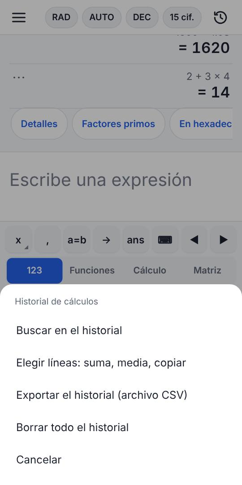
Las líneas fijadas con estrella se quedan aunque el historial esté lleno.
Fijar, notas y búsqueda
- Elige ☆ Fijar arriba en el ⋯ de una línea: sube junto a las otras líneas fijadas.
- Elige Añadir una nota breve en ⋯ y escribe una nota breve. Aparece sobre la expresión.
- En 🕘, Buscar en el historial muestra solo las líneas cuya expresión, resultado o nota tiene las palabras que escribes.
Una línea con la nota «alquiler» aparece al buscar «alquiler».
Sumar líneas
- Elige Elegir líneas: suma, media, copiar en 🕘.
- Toca las líneas que quieres sumar.
- La suma y el promedio aparecen abajo, con su unidad si las unidades coinciden. Copiar copia las líneas.
- No se pueden sumar líneas con unidades distintas (m y kg); se muestra el motivo.
Exportar el historial (CSV)
Pro Es una función de QCalc Pro.
Qué hace Guarda el historial como archivo CSV que abren las hojas de cálculo.
- Elige Exportar el historial (archivo CSV) en 🕘.
- Elige dónde guardarlo en la pantalla de guardar de Android.
Teclas de memoria (M+ M− MR MC)
Qué hace Las teclas de memoria de una calculadora de bolsillo. El valor se guarda en su forma exacta.
- Abre Más ajustes en Ajustes y activa Mostrar las teclas de memoria (M+ M− MR MC).
- Con un resultado en pantalla, M+ lo suma a la memoria y M− lo resta.
- MR pone la memoria en el campo de entrada; MC la borra.
Teclas y ayudas para escribir
Las cuatro páginas de teclas
Qué hace Las teclas están en cuatro páginas que se cambian con las pestañas de arriba.
| Página | Teclas principales |
|---|---|
| 123 | Dígitos, + − × ÷, paréntesis, %, ^, √ |
| Funciones | sin, cos, tan, log, ln, valor absoluto, factorial y más |
| Cálculo | Derivada d/dx, integral ∫, límite lim, suma Σ, producto Π, ecuaciones |
| Matriz | Matriz ▦, determinante det, traspuesta, inversa |
Si no sabes el nombre de una función, búscalo en Listas: funciones, unidades, constantes (Listas).
Casillas □ (los formularios)
Qué hace Las teclas de integral y límite abren un formulario con casillas □. Rellénalas y la expresión queda hecha.
- Pulsa ∫ en la página Cálculo.
- Escribe la función y los límites inferior y superior. Siguiente ▶ pasa a la siguiente casilla.
- El resultado aparece abajo. = lo guarda en el historial.
El ⋯ del formulario tiene Borrar todas las casillas y Cómo usar este formulario ›.
Sugerencias
Qué hace Mientras escribes, aparecen sugerencias bajo el campo: después de «to», las unidades de destino; con el teclado, nombres de funciones y unidades.
- Escribe
5 km to: se sugieren mi, m, ft y otras. - Toca una para escribirla.
Escribir funciones, unidades y monedas
Qué hace Las expresiones se escriben como en Qalculate!. Las formas habituales:
| Escribe | Significa |
|---|---|
sqrt(x), √x | Raíz cuadrada |
x^2 | Potencia |
5 km to mi | Convertir una unidad |
100 USD to EUR | Convertir una moneda (con los tipos de cambio) |
solve(x^2 − 5x + 6 = 0) | Resolver una ecuación |
diff(x^3) | Derivada |
integrate(x^2, 0, 1) | Integral definida |
ans | El último resultado |
También funcionan diez unidades tradicionales japonesas (tsubo, shaku, shō, kan y otras): 30 tsubo to m^2.
Listas: funciones, unidades, constantes, tus definiciones
Qué hace Listas: funciones, unidades, constantes en el menú tiene cuatro pestañas: funciones, unidades y monedas, variables y constantes, y tus propias definiciones, cada una con búsqueda.
- Abre Listas: funciones, unidades, constantes desde ☰.
- Elige una pestaña y escribe parte de un nombre en la casilla de arriba.
- Toca un elemento para leer su descripción; Insertar lo pone en el campo de entrada.
En la pestaña de tus definiciones puedes guardar variables (r = 5 cm) y funciones; se conservan para la próxima vez.
Monedas y tipos de cambio
Qué hace Las monedas se convierten como 100 USD to EUR. Los tipos de cambio se actualizan solos al abrir la app (al iniciarla o al volver a ella; hace falta conexión a internet). En itinerancia (roaming) en el extranjero y con Ahorro de datos no se actualizan solos; si hace falta, pulsa Actualizar ahora.
- Para actualizarlos ya, pulsa Actualizar los tipos de cambio ahora en Ajustes.
- La hora de la última actualización está en la misma fila.
- Sin internet no se pueden actualizar; se usan los últimos descargados.
Los precios del bitcoin (BTC) y del oro (XAU), la plata (XAG), el platino (XPT) y el paladio (XPD) también se actualizan junto con los tipos de cambio.
Los tipos se guardan en el dispositivo, así que donde no hay internet puedes convertir con los últimos descargados. Conviene abrir la app una vez antes de un viaje.
Las constantes físicas son los valores de CODATA 2022 que trae el motor de cálculo; no se toman de internet. Los nuevos valores recomendados llegan con las actualizaciones de la app.
Herramientas
Encontrar una herramienta
Qué hace Herramientas en el menú tiene las herramientas cotidianas y las de formas, volúmenes y datos. Busca por lo que quieres hacer.
- «?»: abre este manual en la herramienta
- Ejemplos: un toque los rellena
- Casillas: escribe los números (un número gris es un ejemplo)
- Resultados: un toque pone la expresión en el campo, guarda el resultado en el historial o lo copia
- Una línea de advertencia (herramientas de dinero o seguridad)
- Una línea de explicación
- Abre Herramientas desde ☰.
- Escribe arriba lo que quieres hacer, como «préstamo», «tanque» o «media».
- Toca la herramienta.
- Toca un ejemplo o escribe los números. El resultado aparece al momento.
Las herramientas usadas hace poco salen primero. Abrir QCalc rápido abajo del todo añade el widget o el mosaico.
Precio: descuento e impuesto
Qué hace El precio con o sin impuesto, uno o dos descuentos, y cómo redondear.
- Abre Precio: descuento e impuesto en Herramientas.
- Escribe el precio, el descuento (%) y el impuesto.
- Elige si el precio incluye el impuesto y cómo redondear.
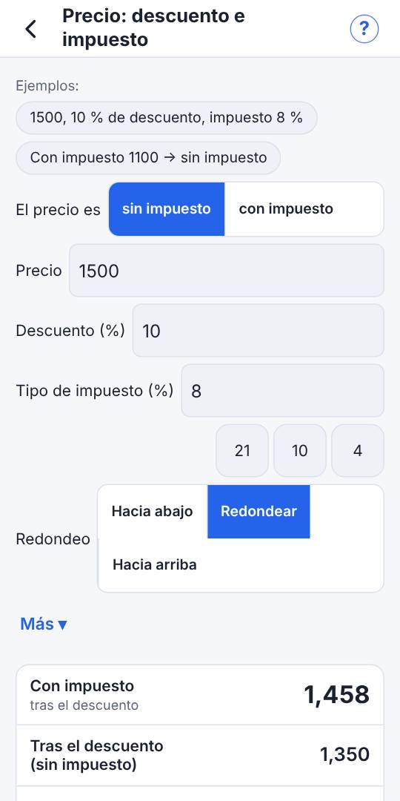
1500 con 10 % de descuento e impuesto del 8 % → 1,458 con impuesto (1,350 sin impuesto, impuesto 108)
- Para obtener el precio sin impuesto a partir de uno con impuesto, elige primero «con impuesto».
Porcentajes
Qué hace Qué porcentaje de B es A, y el cambio de A a B en porcentaje.
- Abre Porcentajes y elige qué calcular.
- Escribe A y B.
30 de 120 → 25 %. De 80 a 100 → sube un 25 %
Precio unitario: cuál es más barato
Qué hace Compara el precio por 100 g (100 mL, una pieza) de dos productos.
- Abre Precio unitario: cuál es más barato.
- Escribe el precio y la cantidad (500 g, 1 kg) de A y B.
298 por 500 g y 498 por 1 kg → B es más barato (59.6 y 49.8 por 100 g, 16.4 % menos)
Dividir la cuenta
Qué hace Lo que paga cada persona, redondeado como elijas.
- Abre Dividir la cuenta y escribe el total y el número de personas.
- Elige redondear hacia arriba o hacia abajo.
10000 entre 3 → cada uno 3,333.34 (hacia arriba; sobran 0.02)
Préstamo
Qué hace La cuota mensual, los intereses totales y la tabla de pagos, con cuotas iguales o capital igual.
- Abre Préstamo.
- Escribe el importe, el interés anual y los años.
- Elige cómo se devuelve.
- Abre Cuotas, mes a mes para ver la tabla.
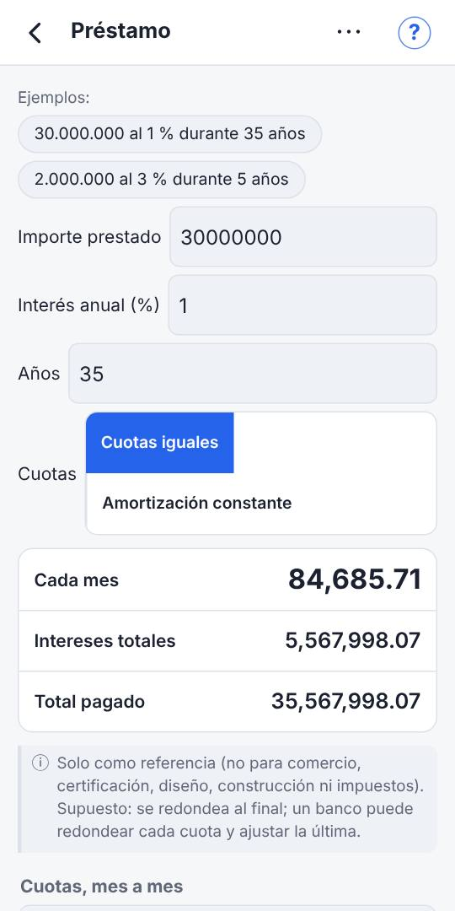
30,000,000 al 1 % a 35 años (cuotas iguales) → 84,685.71 al mes, intereses totales 5,567,998.07
Pro Es una función de QCalc Pro. Guardar la tabla como archivo CSV es una función de QCalc Pro (verla y copiarla es gratis).
- Escribir 0.01 por 1 % da 0.01 %. Escribe el número de por ciento.
Ahorro e interés compuesto
Qué hace En cuánto se convierte un ahorro mensual o una suma con interés compuesto.
- Abre Ahorro e interés compuesto y escribe el importe mensual (o la suma inicial), el interés anual y los años.
30,000 al mes, 3 %, 20 años → 9,849,059.94 (aportado 7,200,000; intereses 2,649,059.94)
Fechas
Qué hace Los días entre dos fechas, n días después o antes, una edad, el día de la semana.
- Abre Fechas y elige qué calcular.
- Escribe las fechas y los días.
100 días desde hoy → la fecha y su día de la semana
Horas
Qué hace Suma y resta h:mm, y da las horas trabajadas sin descansos y el sueldo.
- Abre Tiempos y escribe la hora de inicio, la de fin y el descanso.
- Escribe el sueldo por hora para obtener el sueldo.
De 9:00 a 17:30 con 1:00 de descanso → 7:30 trabajadas (7.5 horas)
Convertir unidades y monedas
Qué hace Escribe un número en cualquiera de dos filas; la otra se convierte. Longitud, peso, volumen, temperatura, consumo, monedas y más.
- Abre Convertir unidades y monedas y elige el tipo de magnitud con los botones de arriba.
- Elige las unidades de las dos filas.
- Escribe un número en cualquiera de ellas.
- ⇅ intercambia las filas.
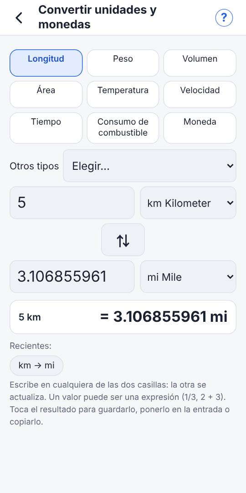
5 km → 3.106856 mi
Toca la fila del resultado para poner «5 km to mi» en el campo de entrada o guardarlo en el historial.
Figuras: área, volumen, longitud
Qué hace Elige una figura por su dibujo y escribe sus medidas: aparecen el área, el perímetro, el volumen y la superficie.
- Abre Figuras planas o Cuerpos en Herramientas.
- Toca el dibujo de una figura.
- Escribe las medidas indicadas en el dibujo (r, h). Las medidas redondas pueden ser radio o diámetro.
- Los resultados cambian mientras escribes; un toque usa o copia su expresión.
Una esfera de radio 2 → volumen 32π/3 ≈ 33.5103, superficie 16π
Elige un material para obtener el peso.
⟳ 3D, arriba a la izquierda del dibujo, muestra el sólido en 3D para girarlo (Sólidos y depósitos en 3D).
Tanques: líquido y nivel
Qué hace La cantidad de líquido en un tanque horizontal o vertical, o en un recipiente redondo, a partir de la altura del líquido, y la altura para una cantidad.
- Abre Depósitos: líquido y nivel en Herramientas.
- Elige la forma y escribe el diámetro (o el radio) y la longitud.
- Escribe la altura del líquido y elige la unidad de longitud.
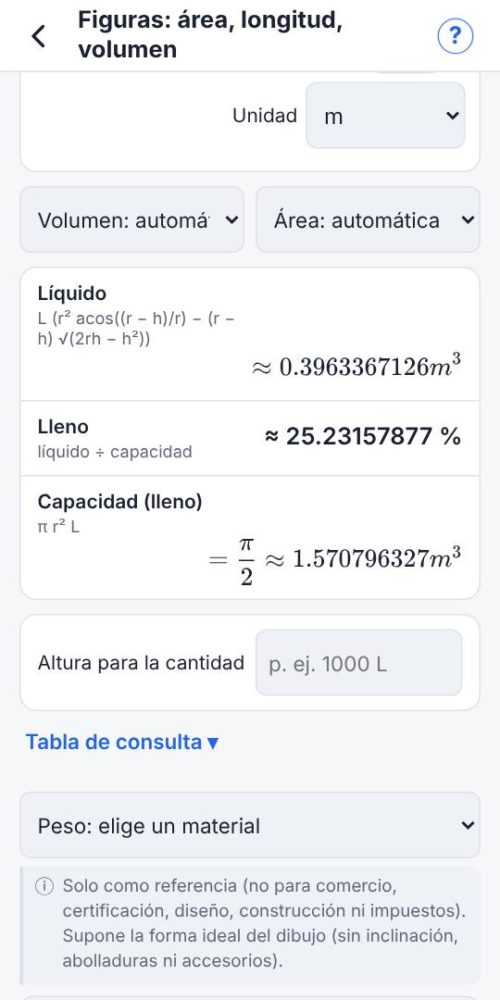
Horizontal, diámetro 1 m, longitud 2 m, líquido a 30 cm → 0.396337 m³ (unos 396 L)
Tabla de consulta ▾ da la cantidad para cada altura.
- Un radio escrito en la casilla del diámetro da más o menos la cuarta parte. Comprueba radio o diámetro.
Fondos de tanques y tablas de consulta
Pro Es una función de QCalc Pro.
Qué hace Añade los fondos de los dos extremos del tanque (semiesférico, semielíptico 2:1, toriesférico) a la cantidad de líquido y al volumen total, con una tabla de la cantidad para cada altura.
- En Depósitos: líquido y nivel, elige un cilindro horizontal o vertical.
- Elige Semiesférico o Semielíptico 2:1 en Fondos; los toriesféricos están en Otros fondos ▾.
- L es la longitud del cuerpo (sin los fondos).
- En Tabla de consulta ▾, escribe el paso: una tabla de alturas y cantidades, para copiar o guardar como CSV.
Los fondos planos (un cilindro simple, como antes) son gratis.
Sólidos y depósitos en 3D
Pro Es una función de QCalc Pro.
Qué hace La figura de Cuerpos o Depósitos, con las medidas escritas, en 3D para girarla. Encima, en grande, el volumen y el área superficial de la herramienta (en un depósito, la cantidad de líquido y la capacidad).
- En Cuerpos o Depósitos de las herramientas, elija una figura y escriba sus medidas.
- Pulse ⟳ 3D arriba a la izquierda del dibujo (se lee como Ver en 3D). La figura crece en 3D.
- Gírela con un dedo y amplíe con dos. Un sólido de revolución muestra su corte con Cortar por la mitad.
- ← Volver a la figura vuelve a la herramienta con la misma figura y las mismas medidas.
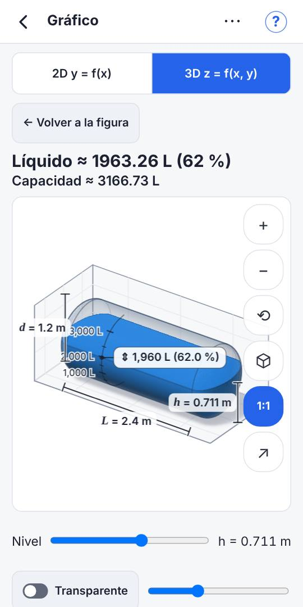
Un cilindro de 30 cm de diámetro y 50 cm de altura → volumen 11250π ≈ 35342,91735 cm³
El depósito se dibuja transparente y el líquido como un sólido de su propio color. Arrastre hacia arriba o abajo desde el nivel (el recuadro con la cantidad) para moverlo: Altura del líquido de la herramienta cambia también. Arrastrar en otro sitio gira el gráfico. El control Nivel de abajo también lo mueve.
Las marcas de la pared son cantidades redondas: en un depósito horizontal o esférico sus distancias son visiblemente desiguales.
Los números del nivel están redondeados para leerlos (3 cifras significativas, % con un decimal); los valores exactos están encima del gráfico y en la herramienta (Cifras mostradas en cada herramienta).
Sin QCalc Pro, la fila Girarlo en 3D (QCalc Pro) aparece justo encima de los resultados.
Volumen a partir de medidas
Qué hace El volumen de un movimiento de tierras o de un estanque a partir de una tabla de secciones (áreas medias, regla de Simpson) o de una cuadrícula de alturas.
- Abre Volumen a partir de medidas en Herramientas.
- Elige secciones o alturas de puntos, y escribe las distancias y las áreas (o las alturas).
- Elige la unidad de longitud: el volumen se da en m³ y L.
Secciones x² (de 0 a 4, cada 1 m) → áreas medias 22 m³, regla de Simpson 64/3 m³ ≈ 21.33 m³
Se pueden pegar en la tabla dos columnas copiadas de una hoja de cálculo.
Sólido a partir de un perfil
Pro Es una función de QCalc Pro.
Qué hace El volumen, la capacidad, el peso y la superficie de una pieza torneada o un recipiente a partir de una tabla de posiciones y diámetros a lo largo de su eje.
- Abre Sólido a partir de un perfil en Herramientas.
- Escribe las posiciones y los diámetros (o radios). Dos filas en la misma posición forman un escalón.
- Elige la unidad (mm, cm, m, in).
- Más ▾ añade el perfil interior de un recipiente y la contracción de la cerámica.
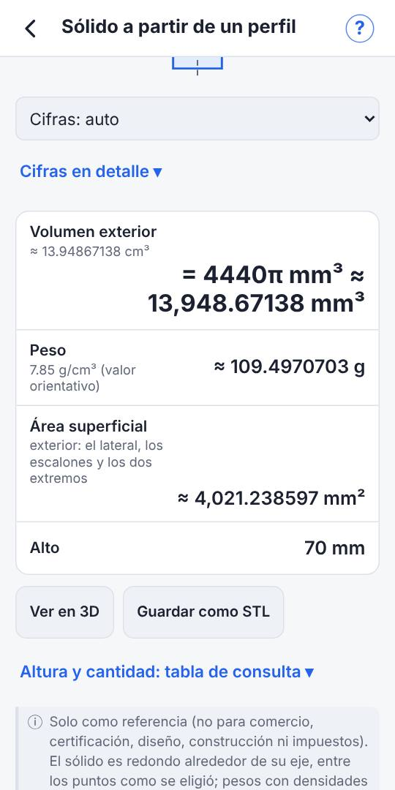
El eje escalonado de ejemplo → volumen exterior 4440π mm³ ≈ 13.95 cm³, unos 109.5 g en hierro
Ver en 3D muestra la forma; un archivo STL se puede imprimir con una impresora 3D (Archivos STL).
Archivos STL para impresoras 3D
Pro Es una función de QCalc Pro.
Qué hace Guarda un sólido de revolución, un sólido de sección conocida o un sólido a partir de un perfil como archivo STL para impresoras 3D.
- Pulsa Guardar como STL bajo los resultados del sólido.
- Elige «1 unidad = □ mm» y lo finos que son los triángulos.
- Pulsa Guardar el archivo STL y elige dónde guardarlo.
Antes de imprimir, comprueba el tamaño y las paredes en tu programa de laminado.
Estadística
Qué hace Para una columna: la media, la mediana, la desviación típica, los cuartiles y más; para dos columnas: la recta de regresión y la correlación.
- Abre Estadística en Herramientas.
- Escribe los valores o pégalos de una hoja de cálculo.
- Con dos columnas, 📈 Ver en un gráfico dibuja los puntos y la recta.
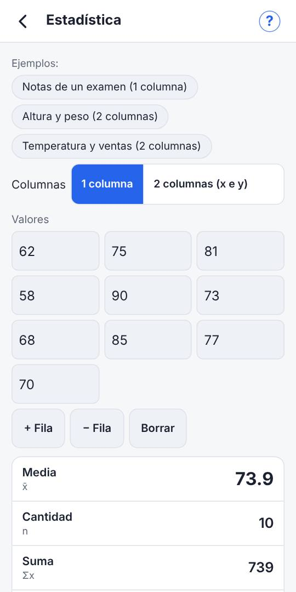
Notas de 10 personas → media 73.90, mediana 74.00, desviación típica (muestra) 9.94
Los cuartiles salen primero por el método de los libros de bachillerato de Japón; el de las hojas de cálculo está en «Más».
- Un valor que no es un número se muestra con su fila y cómo corregirlo.
Notas de cálculo
Qué hace Una nota con un cálculo por línea y su resultado a la derecha. Da nombre a un valor y úsalo en las líneas de abajo.
- Abre Notas de cálculo en Herramientas.
- Escribe un cálculo por línea, como
rent = 85000 JPY. - Usa el nombre en una línea posterior:
rent × 12. - Una línea con la palabra de total suma los resultados de arriba.
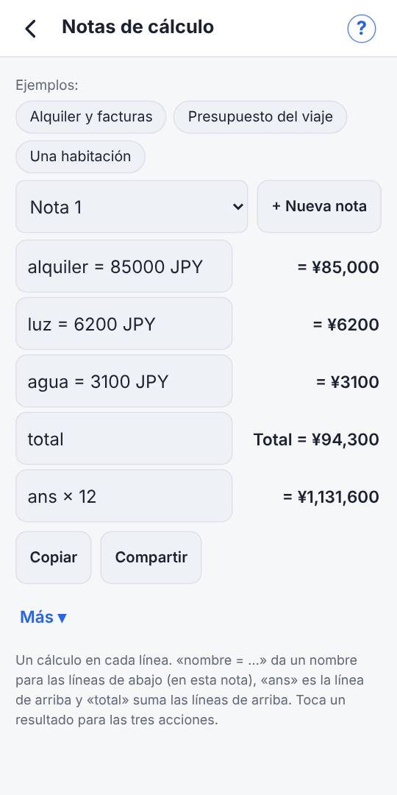
alquiler 85000, luz 6200, agua 3100 (JPY) → la línea del total muestra ¥94300
Pro Es una función de QCalc Pro. La primera nota es gratis. Más notas y guardarlas como texto o CSV son funciones de QCalc Pro.
Una línea que empieza por # o // es un comentario (no se calcula).
Gráficas
Gráfica 2D
Qué hace Dibuja gráficas de y = f(x). Arrastra para moverlas, pellizca para ampliar.
- Abre Gráfico desde ☰ (o 📈 sobre el campo de entrada).
- Escribe las funciones, una por línea, y el intervalo de x.
- Pulsa Dibujar.
- Toca la gráfica para ver las coordenadas de un punto.
Cálculo ▾ da la derivada, tangentes, ceros y extremos.
Toca un ejemplo bajo la gráfica para dibujarlo.
Área y longitud
Qué hace El área entre una curva y el eje x o entre dos curvas, y la longitud de una curva. Los extremos del intervalo se arrastran con el dedo.
- Dibuja las funciones en la gráfica 2D.
- Abre Área y longitud ▾.
- Escribe el intervalo a y b, o arrastra las líneas de sus extremos.
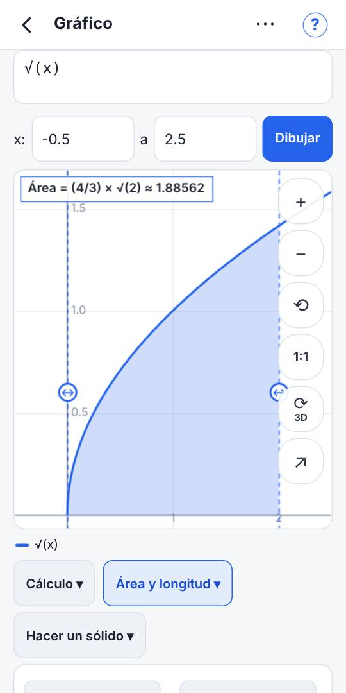
√x de 0 a 2 → área 1.8856181
Cambia a Longitud para la longitud de la curva.
Crear un sólido (sólidos de revolución)
Qué hace El volumen y la superficie del sólido que se obtiene al girar una región de la gráfica 2D alrededor de un eje.
- Dibuja las funciones en la gráfica 2D (por ejemplo
xyx^2). - Pulsa el botón redondo ⟳ 3D de la gráfica. El sólido alrededor del eje x aparece al momento en 3D, con su volumen grande encima (QCalc Pro). Sin Pro, la gráfica 2D muestra el corte del sólido (reflejado al otro lado del eje) y su volumen.
- Para otro eje, vuelve con ← Volver a 2D y toca su línea; la línea y = k se arrastra con el dedo. Ver en 3D lo muestra de nuevo en 3D.
- ↶ Deshacer vuelve al eje anterior.
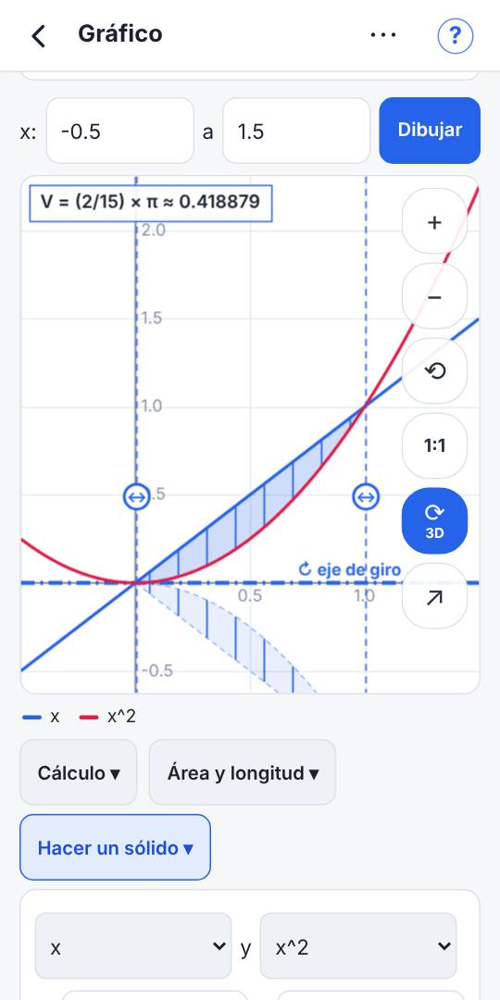
Entre y = x e y = x², alrededor del eje x → volumen 2π/15 ≈ 0.41887902
Mostrar el método con líneas dibuja los discos (arandelas) o las capas. La línea Teorema de Pappus-Guldin: compara el volumen a partir del centroide con la integral.
Pro Es una función de QCalc Pro. Girar el sólido con el dedo en 3D es una función de QCalc Pro, como la gráfica 3D. Sin Pro aparece en su lugar la fila Girarlo en 3D (QCalc Pro).
Sólidos de sección conocida
Qué hace El volumen de un sólido cuya base es la región entre dos curvas, con cuadrados, triángulos equiláteros o semicírculos levantados sobre ella.
- Abre Hacer un sólido ▾.
- Elige Secciones (figuras sobre la región).
- Elige la forma (□ △ ◠); hay otras en Más figuras ▾.
Cuadrados sobre la región entre y = x e y = x² → volumen 1/30
Gráfica 3D
Pro Es una función de QCalc Pro.
Qué hace Dibuja superficies z = f(x, y) y sólidos en 3D que puedes girar con el dedo.
- Elige 3D z = f(x, y) en Gráfico.
- Escribe hasta cuatro funciones y los intervalos de x e y, y pulsa Dibujar.
- Gira con un dedo y amplía con dos.
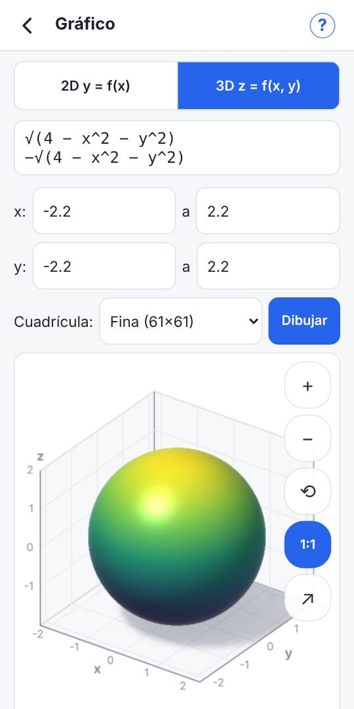
Derivadas parciales ▾ dibuja ∂f/∂x y ∂f/∂y.
Volumen y superficie (3D)
Qué hace El volumen bajo una superficie de la gráfica 3D (o entre dos superficies) y el área de la superficie.
- Dibuja las superficies en la gráfica 3D.
- Abre Volumen y superficie ▾: el volumen y la superficie aparecen al momento.
- Elige la región: un rectángulo, un disco, la parte encerrada o una dada por fórmulas.
La esfera de ejemplo (radio 2) → volumen 32π/3, superficie 16π
En Ejemplo, abajo, se puede elegir cualquier sólido: Dibujar lo dibuja en 3D con los valores de Figuras, y Cambiar los números abre Figuras.
Para un sólido hecho en la gráfica 2D (⟳ 3D) o en Sólido a partir de un perfil, Volumen y superficie ▾ en su vista 3D muestra los valores hallados allí (Valores del sólido de revolución). Las herramientas de la región vuelven cuando se dibujan otras fórmulas.
Donde las superficies no tienen valores reales en parte de la región, Medir la parte encerrada mide solo donde son reales.
Formularios: cálculo, ecuaciones, matrices
Derivadas, integrales, límites, sumas
Qué hace Las teclas de la página Cálculo abren un formulario con casillas □.
- Pulsa d/dx, ∫, lim, Σ u otra tecla en la página Cálculo.
- Rellena las casillas. La variable puede seguir siendo x.
- El resultado aparece abajo; = lo guarda en el historial.
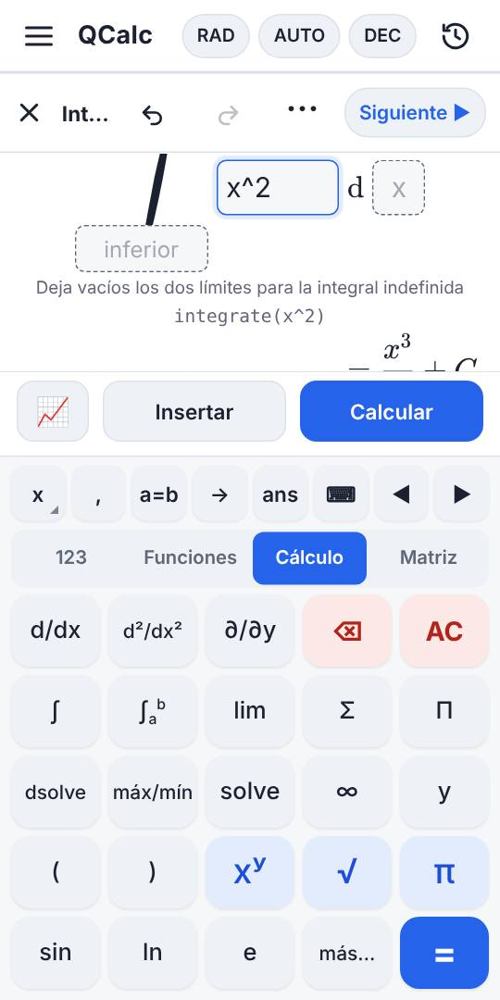
∫ x² sin(x) dx de 0 a π → π² − 4 ≈ 5.869604401
Un límite puede ser Ambos lados, Por la derecha (+) o Por la izquierda (−).
Ecuaciones
Qué hace Resuelve ecuaciones y sistemas de ecuaciones.
- Pulsa la tecla de ecuación en la página Cálculo o escribe
solve(x^2 − 5x + 6 = 0). - El resultado se muestra como «x = 2 o x = 3».
solve(x^2 − 5x + 6 = 0) → x = 2, x = 3
Matrices y vectores
Qué hace ▦ en la página Matriz escribe una matriz como una tabla (hasta 30 × 30).
- Pulsa ▦ en la página Matriz.
- Elige filas y columnas y rellena las casillas.
- Calcula con det, traspuesta, inversa y las demás teclas.
Se pueden pegar tablas de una hoja de cálculo; Copiar como tabla (para una hoja de cálculo) en ⋯ las vuelve a copiar.
Ajustes, idioma, widget
Ajustes
Qué hace Los ajustes más usados están arriba; los que casi nadie cambia, en Más ajustes. Un cambio se aplica al momento.
| Ajuste | Qué cambia |
|---|---|
| Unidad de ángulo | Radianes, grados, gradianes |
| Exacto o aproximado | Automático, siempre exacto, siempre aproximado |
| Formato de números | El separador decimal y los grupos de cifras (Formato de números) |
| Fracciones | Automático, decimal, fracción, fracción mixta |
| Precisión (cifras significativas) | La precisión de los cálculos (10 por defecto) |
| Cifras mostradas en cada herramienta | Las cifras de cada herramienta y las comunes de Figuras, Depósitos, sólidos y el gráfico (Cifras mostradas en cada herramienta) |
| Claro u oscuro | Los colores de la pantalla |
| Tamaño del texto | El texto del historial, el campo de entrada y el resultado |
| Tema de color | El color de las teclas (salvo el azul: QCalc Pro) |
| Mostrar el resultado mientras escribes | La vista previa |
| Actualizar los tipos de cambio ahora | Descarga los tipos al momento |
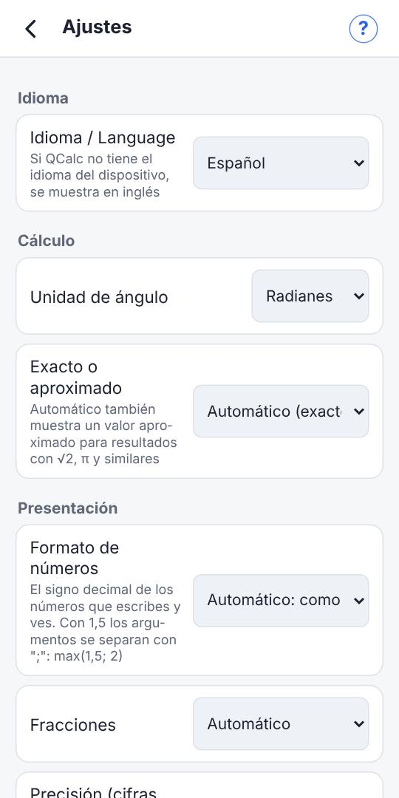
Restablecer todos los ajustes devuelve todo a los valores iniciales (el idioma se mantiene).
Cifras mostradas en cada herramienta
Qué hace Cada herramienta puede mostrar sus resultados con su propio número de cifras. Abre Cifras mostradas… desde ⋯ a la derecha del título de la herramienta. Figuras (con los depósitos), Sólido a partir de un perfil y el gráfico (área, longitud, Hacer un sólido, 3D) comparten un ajuste.
- En una herramienta, pulsa ⋯ y elige Cifras mostradas….
- Elige Recomendado (automático), Cifras significativas o Decimales, y ajusta el número con + y −. Cada herramienta recuerda su elección.
- Con las cifras elegidas, los Ceros finales pueden ser Mantener (2,50) (al principio: exactamente tantas cifras como se eligieron, 1,000000000) o Quitar (2,5) (1).
- Una herramienta que no usa sus cifras predeterminadas lleva la marca «cambiado» en la lista de los ajustes y en Cifras mostradas… de su ⋯.
El volumen de un cilindro 11250π ≈ 35342,91735 cm³ → recomendado 11250π ≈ 35342,9 cm³; con 2 decimales 11250π ≈ 35342,92 cm³; con 4 cifras significativas 11250π ≈ 35340 cm³
En Figuras, Depósitos, Sólido a partir de un perfil y el gráfico, Más: cada tipo, la imagen 3D, redondeo, CSV ▾ ajusta además Por separado para cada tipo de magnitud (volumen, área, longitud, peso y %), los números En la imagen 3D (recomendado: 3 cifras significativas, % con un decimal), el redondeo (Redondear, Truncar o Redondear hacia arriba) y las tablas guardadas como CSV (Todas las cifras o Como se muestra). Los valores exactos (11250π) se mantienen; solo cambian los números tras "≈".
Hay tres formas de volver. Para una herramienta, pulsa Volver al valor predeterminado (recomendado) en ⋯ → Cifras mostradas…. Para todas, pulsa Todo al valor predeterminado (recomendado) en Cifras mostradas en cada herramienta de los ajustes (Precisión (cifras significativas) de la calculadora vuelve también a 10 y Máximo de decimales a sin límite). Para todo, pulsa Restablecer todos los ajustes en los ajustes (los ajustes y las cifras de cada herramienta vuelven a sus valores predeterminados; el idioma se queda). Las cifras recomendadas son una o dos más de las que suelen hacer falta (a los valores exactos no se les añaden cifras). El dinero se muestra hasta la unidad más pequeña de la moneda de tu región (0,01 euros), con sus ceros (19,90); Figuras, Depósitos y Sólido a partir de un perfil tienen 6 cifras significativas tras "≈", el área, la longitud, Hacer un sólido y los valores 3D del gráfico 8 (al menos 5 decimales), y el % un decimal. Las cifras recomendadas no llevan ceros finales, salvo el dinero, los precios por unidad y la estadística.
El cálculo se hace con 12 cifras más de las que se muestran (al menos 4 cerca del límite de la precisión; la integración numérica 4 más, como mucho 24 cifras), y el resultado se redondea para mostrarlo.
La integración numérica (áreas, longitudes y volúmenes del gráfico) es segura hasta unas 20 cifras: no se muestran más de 20. Los números calculados en doble precisión (las herramientas que calculan en JavaScript: precio, porcentajes, precio por unidad, estadística y otras; la altura del líquido, las tablas de los depósitos, Sólido a partir de un perfil, la imagen 3D) muestran como máximo 12 cifras.
La calculadora, los formularios y las notas usan Precisión (cifras significativas) de los Ajustes.
Idioma
Qué hace La app está en English, 日本語, Español, Deutsch, Français, 한국어 y 繁體中文.
- Elige Idioma en ☰.
- Elige un idioma: la app se vuelve a abrir en él, con el historial y la expresión que estabas escribiendo.
- Igual que el dispositivo vuelve a seguir el idioma del teléfono.
Desde Android 13, el idioma también se puede elegir para cada app en los ajustes del teléfono.
Widget, mosaico y accesos directos
Qué hace Abre QCalc rápido desde un widget en la pantalla de inicio, un mosaico de los ajustes rápidos o los accesos directos del icono. Todo gratis.
- Abre Abrir QCalc rápido abajo del todo en Herramientas.
- Elige el widget o el mosaico y sigue la pantalla.
- Mantén pulsado el icono para los accesos directos Nuevo cálculo, Herramientas y Convertir.
El widget muestra el último resultado y botones para calcular, herramientas y convertir.
Acerca de esta app y privacidad
Qué hace Acerca de esta app muestra la versión, la privacidad, las licencias y enlaces al código fuente.
- Valorar en Google Play abre la página de QCalc en Google Play, donde puedes dar estrellas y escribir una reseña.
- Recomendar QCalc a alguien comparte la dirección de QCalc en Google Play.
- Enviar un error o una idea abre un borrador en la app de correo solo con la versión, el móvil y el idioma; tú decides si lo envías.
- QCalc no recoge datos personales ni envía nada.
- Solo usa internet para descargar los tipos de cambio.
- El motor de cálculo tiene la licencia GNU GPL v2 o posterior (Licencias de código abierto).
QCalc Pro
Qué es gratis
Qué hace Los cálculos, las gráficas 2D, áreas y longitudes, sólidos de revolución, figuras, tanques (fondos planos), las herramientas cotidianas, la conversión, la estadística, la primera nota de cálculo, el widget y este manual son gratis, sin anuncios.
Qué añade QCalc Pro
Qué hace Una sola compra desbloquea todas las funciones Pro, también las de futuras actualizaciones. Sin suscripción ni anuncios.
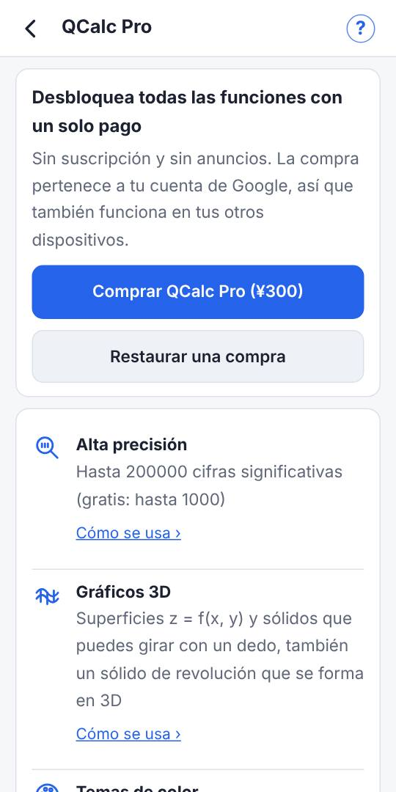
| Función | Sección de este manual |
|---|---|
| Más de 1000 cifras significativas (hasta 200000) | Leer el resultado |
| Gráficas 3D, ver en 3D | Gráfica 3D |
| Temas de color (7 colores) | Ajustes |
| Exportar el historial (CSV) | Exportar el historial |
| Tablas como CSV (préstamo, ahorro) | Préstamo |
| Fondos de tanques y tablas de consulta | Fondos de tanques |
| Sólido a partir de un perfil | Sólido a partir de un perfil |
| Sólidos y depósitos en 3D | Sólidos y depósitos en 3D |
| Archivos STL | Archivos STL |
| GIF e imágenes sin la marca | Compartir |
| Más notas de cálculo, guardadas como archivo | Notas de cálculo |
Cómo se usa › en una fila de las funciones Pro abre su sección de este manual.
Comprar y restaurar
El precio se muestra en la pantalla de compra de Google Play.
- Abre QCalc Pro desde ☰ (o desde el panel que muestra una función bloqueada).
- Pulsa Comprar QCalc Pro y compra en la pantalla de Google Play.
- En un teléfono donde ya lo compraste, o tras reinstalar, pulsa Restaurar una compra.
La compra pertenece a tu cuenta de Google, así que funciona también en tus otros dispositivos.
Si algo falla
Preguntas frecuentes
- El resultado no sale en decimal: revisa el botón de arriba o Exacto o aproximado.
- x da resultados raros: x es una variable; multiplica con la tecla ×.
- Los tipos de cambio son antiguos: pulsa Actualizar los tipos de cambio ahora (con internet).
- Falta la fila superior de teclas: con texto grande está oculta; ⌨ al final de las pestañas la muestra.
- La gráfica 3D no se abre: la gráfica 3D es una función de QCalc Pro (QCalc Pro).
Mensajes de error y cómo corregirlos
Qué hace Un mensaje de error dice qué está mal y cómo corregirlo. Los más comunes:
| Mensaje | Cómo corregirlo |
|---|---|
| Los paréntesis no se emparejan | Pon el mismo número de ( y ) |
| No se puede leer 1.5 (con coma decimal) | Escribe 1,5; separa los argumentos con «;» |
| Las unidades no coinciden | Suma magnitudes del mismo tipo (m y kg no se suman) |
| Dibuja primero una función | Pulsa Dibujar en la gráfica antes de abrir el área o el sólido |
| Se alcanzó el tiempo límite | Alarga el tiempo límite o simplifica la expresión |
El tiempo límite de un cálculo
Qué hace Un cálculo muy largo se detiene tras Límite de tiempo (segundos) (20 segundos por defecto, de 1 a 3600).
- Mientras calcula aparece un aviso; tócalo para detenerlo.
- Para permitir más tiempo, cambia Límite de tiempo (segundos) en Más ajustes de Ajustes.
Advertencias sobre el uso de los resultados
Los resultados de QCalc son orientativos. No los uses para el comercio o la certificación (incluida la metrología legal), el diseño y la construcción, la declaración de impuestos, la medicina ni decisiones de seguridad.
- La cantidad de un tanque supone la forma ideal del tanque; un tanque real puede diferir.
- Los pesos usan densidades típicas.
- Los impuestos son los tipos habituales de noviembre de 2026 y se pueden cambiar en la casilla.
- Los tipos de cambio son los descargados, no los de una operación real.
- Las herramientas de dinero o seguridad muestran una línea de advertencia bajo los resultados.
Glosario
| Palabra | Significado |
|---|---|
| Valor exacto | Un valor con fracciones, √ y π. Empieza por «=» |
| Aproximación | Un valor en decimal. Empieza por «≈» |
| Cifras significativas | El número de cifras de un resultado (la precisión) |
| ans | El último resultado |
| Vista previa | El resultado bajo el campo de entrada mientras escribes |
| Sólido de revolución | Un sólido creado al girar una región alrededor de un eje |
| Fondo | La tapa de cada extremo de un tanque |
| Tabla de consulta | Una tabla de la cantidad para cada altura del líquido |
| STL | Un formato de archivo de sólidos para impresoras 3D |
| CSV | Una tabla en un archivo de texto que abren las hojas de cálculo |
| QCalc Pro | Las funciones para el trabajo, desbloqueadas con una compra |
Índice alfabético
- ↶ Deshacer — Crear un sólido (sólidos de revolución)
- ☆ Fijar arriba — Historial y memoria, Fijar, notas y búsqueda
- Abrir QCalc rápido — Encontrar una herramienta, Widget, mosaico y accesos directos
- Acerca de esta app — Acerca de esta app y privacidad
- Acerca de esta app y privacidad — Acerca de esta app y privacidad
- Actualizar ahora — Monedas y tipos de cambio
- Actualizar los tipos de cambio ahora — Monedas y tipos de cambio, Ajustes, Preguntas frecuentes
- Advertencias sobre el uso de los resultados — Advertencias sobre el uso de los resultados
- Ahorro e interés compuesto — Novedades de 1.12.0, Ahorro e interés compuesto
- Ajustes — Leer el resultado: exacto, aproximado, fracciones, Formato de números: el separador decimal, Teclas de memoria (M+ M− MR MC), Monedas y tipos de cambio
- Altura del líquido — Sólidos y depósitos en 3D
- Ambos lados — Derivadas, integrales, límites, sumas
- Archivos STL para impresoras 3D — Archivos STL para impresoras 3D
- Automático — Formato de números: el separador decimal
- Añadir una nota breve — Historial y memoria, Fijar, notas y búsqueda
- Borrar todas las casillas — Casillas □ (los formularios)
- Borrar todo el historial — Historial y memoria
- Borrar y deshacer — Borrar y deshacer
- Buscar en el historial — Historial y memoria, Fijar, notas y búsqueda
- cambiado — Novedades de 1.13.0, Cifras mostradas en cada herramienta
- Cambiar los números — Volumen y superficie (3D)
- Casillas □ (los formularios) — Casillas □ (los formularios)
- Ceros finales — Cifras mostradas en cada herramienta
- Cifras mostradas en cada herramienta — Novedades de 1.13.0, Ajustes, Cifras mostradas en cada herramienta
- Cifras mostradas… — Novedades de 1.13.0, Cifras mostradas en cada herramienta
- Cifras significativas — Novedades de 1.13.0, Cifras mostradas en cada herramienta
- Claro u oscuro — Ajustes
- Como se muestra — Cifras mostradas en cada herramienta
- Compartir imágenes y GIF — Compartir imágenes y GIF
- Compartir una imagen de la gráfica — Compartir imágenes y GIF
- Comprar QCalc Pro — Comprar y restaurar
- Comprar y restaurar — Comprar y restaurar
- Convertir — Widget, mosaico y accesos directos
- Convertir unidades y monedas — Novedades de 1.12.0, Convertir unidades y monedas
- Copiar — Sumar líneas
- Copiar como tabla (para una hoja de cálculo) — Matrices y vectores
- Copiar el resultado — Historial y memoria
- Cortar por la mitad — Sólidos y depósitos en 3D
- Crear un sólido (sólidos de revolución) — Crear un sólido (sólidos de revolución)
- Cuerpos — Novedades de 1.12.0, Figuras: área, volumen, longitud, Sólidos y depósitos en 3D
- Cuotas, mes a mes — Préstamo
- Cálculo — Las cuatro páginas de teclas, Casillas □ (los formularios), Derivadas, integrales, límites, sumas, Ecuaciones
- Cálculo ▾ — Gráfica 2D
- Cómo se usa › — Qué añade QCalc Pro
- Cómo usar este formulario › — Casillas □ (los formularios)
- Decimales — Novedades de 1.13.0, Cifras mostradas en cada herramienta
- Depósitos — Novedades de 1.12.0, Sólidos y depósitos en 3D
- Depósitos: líquido y nivel — Tanques: líquido y nivel, Fondos de tanques y tablas de consulta
- Derivadas parciales ▾ — Gráfica 3D
- Derivadas, integrales, límites, sumas — Derivadas, integrales, límites, sumas
- Deshacer — Borrar y deshacer
- Dibujar — Gráfica 2D, Gráfica 3D, Volumen y superficie (3D), Mensajes de error y cómo corregirlos
- Dividir la cuenta — Novedades de 1.12.0, Dividir la cuenta
- Ecuaciones — Ecuaciones
- Ejemplo — Volumen y superficie (3D)
- Ejemplos y consejos — Ejemplos y consejos en la app
- Ejemplos y consejos en la app — Ejemplos y consejos en la app
- El tiempo límite de un cálculo — El tiempo límite de un cálculo
- Elegir líneas: suma, media, copiar — Historial y memoria, Sumar líneas
- En la imagen 3D — Cifras mostradas en cada herramienta
- Encontrar una herramienta — Encontrar una herramienta
- Enviar un error o una idea — Acerca de esta app y privacidad
- Escribir funciones, unidades y monedas — Escribir funciones, unidades y monedas
- Escribir una expresión — Escribir una expresión
- Estadística — Novedades de 1.12.0, Estadística
- Exacto o aproximado — Ajustes, Preguntas frecuentes
- Exportar el historial (archivo CSV) — Historial y memoria, Exportar el historial (CSV)
- Exportar el historial (CSV) — Exportar el historial (CSV)
- Fechas — Novedades de 1.12.0, Fechas
- Figuras planas — Figuras: área, volumen, longitud
- Figuras: área, volumen, longitud — Figuras: área, volumen, longitud
- Fijar, notas y búsqueda — Fijar, notas y búsqueda
- Fondos — Fondos de tanques y tablas de consulta
- Fondos de tanques y tablas de consulta — Fondos de tanques y tablas de consulta
- Formato de números — Formato de números: el separador decimal, Ajustes
- Formato de números: el separador decimal — Formato de números: el separador decimal
- Fracciones — Ajustes
- Funciones — Las cuatro páginas de teclas
- Girarlo en 3D (QCalc Pro) — Sólidos y depósitos en 3D, Crear un sólido (sólidos de revolución)
- Gráfica 2D — Gráfica 2D
- Gráfica 3D — Gráfica 3D
- Gráfico — Gráfica 2D, Gráfica 3D
- Guardar como STL — Archivos STL para impresoras 3D
- Guardar el archivo STL — Archivos STL para impresoras 3D
- Hacer un sólido ▾ — Sólidos de sección conocida
- Herramientas — Novedades de 1.12.0, Encontrar una herramienta, Precio: descuento e impuesto, Figuras: área, volumen, longitud
- Horas — Horas
- Idioma — Idioma
- Igual que el dispositivo — Idioma
- Insertar — Listas: funciones, unidades, constantes, tus definiciones
- Las cuatro páginas de teclas — Las cuatro páginas de teclas
- Leer el resultado: exacto, aproximado, fracciones — Leer el resultado: exacto, aproximado, fracciones
- Licencias de código abierto — Acerca de esta app y privacidad
- Listas: funciones, unidades, constantes — Las cuatro páginas de teclas, Listas: funciones, unidades, constantes, tus definiciones
- Listas: funciones, unidades, constantes, tus definiciones — Listas: funciones, unidades, constantes, tus definiciones
- Longitud — Área y longitud
- Límite de tiempo (segundos) — El tiempo límite de un cálculo
- Mantener (2,50) — Novedades de 1.13.0, Cifras mostradas en cada herramienta
- Manual de uso — Ejemplos y consejos en la app
- Matrices y vectores — Matrices y vectores
- Matriz — Las cuatro páginas de teclas, Matrices y vectores
- Medir la parte encerrada — Volumen y superficie (3D)
- Mensajes de error y cómo corregirlos — Mensajes de error y cómo corregirlos
- Monedas y tipos de cambio — Monedas y tipos de cambio
- Mostrar el método con líneas — Crear un sólido (sólidos de revolución)
- Mostrar el resultado mientras escribes — Ajustes
- Mostrar las teclas de memoria (M+ M− MR MC) — Teclas de memoria (M+ M− MR MC)
- Más ajustes — Teclas de memoria (M+ M− MR MC), Ajustes, El tiempo límite de un cálculo
- Más figuras ▾ — Sólidos de sección conocida
- Más ▾ — Sólido a partir de un perfil
- Más: cada tipo, la imagen 3D, redondeo, CSV ▾ — Cifras mostradas en cada herramienta
- Máximo de decimales — Cifras mostradas en cada herramienta
- Nivel — Sólidos y depósitos en 3D
- Notas de cálculo — Novedades de 1.12.0, Notas de cálculo
- Novedades de 1.12.0 — Novedades de 1.12.0
- Novedades de 1.13.0 — Novedades de 1.13.0
- Nuevo cálculo — Widget, mosaico y accesos directos
- Otros fondos ▾ — Fondos de tanques y tablas de consulta
- Poner la expresión en el campo de entrada — Historial y memoria
- Por la derecha (+) — Derivadas, integrales, límites, sumas
- Por la izquierda (−) — Derivadas, integrales, límites, sumas
- Por separado para cada tipo de magnitud — Cifras mostradas en cada herramienta
- Porcentajes — Novedades de 1.12.0, Porcentajes
- Precio unitario: cuál es más barato — Novedades de 1.12.0, Precio unitario: cuál es más barato
- Precio: descuento e impuesto — Novedades de 1.12.0, Precio: descuento e impuesto
- Precisión (cifras significativas) — Leer el resultado: exacto, aproximado, fracciones, Ajustes, Cifras mostradas en cada herramienta
- Preguntas frecuentes — Preguntas frecuentes
- Préstamo — Novedades de 1.12.0, Préstamo
- Quitar (2,5) — Novedades de 1.13.0, Cifras mostradas en cada herramienta
- Qué añade QCalc Pro — Qué añade QCalc Pro
- Qué es gratis — Qué es gratis
- Qué hace QCalc — Qué hace QCalc
- Recomendado (automático) — Novedades de 1.13.0, Cifras mostradas en cada herramienta
- Recomendar QCalc a alguien — Acerca de esta app y privacidad
- Redondear — Cifras mostradas en cada herramienta
- Redondear hacia arriba — Cifras mostradas en cada herramienta
- Restablecer todos los ajustes — Ajustes, Cifras mostradas en cada herramienta
- Restaurar una compra — Comprar y restaurar
- Secciones (figuras sobre la región) — Sólidos de sección conocida
- Semielíptico 2:1 — Fondos de tanques y tablas de consulta
- Semiesférico — Fondos de tanques y tablas de consulta
- Siguiente ▶ — Casillas □ (los formularios)
- Sugerencias — Sugerencias
- Sumar líneas — Sumar líneas
- Sólido a partir de un perfil — Sólido a partir de un perfil, Volumen y superficie (3D)
- Sólidos de sección conocida — Sólidos de sección conocida
- Sólidos y depósitos en 3D — Sólidos y depósitos en 3D
- Tabla de consulta ▾ — Tanques: líquido y nivel, Fondos de tanques y tablas de consulta
- Tamaño del texto — Ajustes
- Tanques: líquido y nivel — Tanques: líquido y nivel
- Teclas de memoria (M+ M− MR MC) — Teclas de memoria (M+ M− MR MC)
- Tema de color — Ajustes
- Teorema de Pappus-Guldin: — Crear un sólido (sólidos de revolución)
- Tiempos — Novedades de 1.12.0, Horas
- Todas las cifras — Cifras mostradas en cada herramienta
- Todo al valor predeterminado (recomendado) — Novedades de 1.13.0, Cifras mostradas en cada herramienta
- Truncar — Cifras mostradas en cada herramienta
- Tus tres primeros cálculos — Tus tres primeros cálculos
- Unidad de ángulo — Ajustes
- Valorar en Google Play — Acerca de esta app y privacidad
- Valores del sólido de revolución — Volumen y superficie (3D)
- Ver en 3D — Sólidos y depósitos en 3D, Sólido a partir de un perfil, Crear un sólido (sólidos de revolución)
- Volumen a partir de medidas — Volumen a partir de medidas
- Volumen y superficie (3D) — Volumen y superficie (3D)
- Volumen y superficie ▾ — Volumen y superficie (3D)
- Volver al valor predeterminado (recomendado) — Novedades de 1.13.0, Cifras mostradas en cada herramienta
- Widget, mosaico y accesos directos — Widget, mosaico y accesos directos
- Área y longitud — Área y longitud
- Área y longitud ▾ — Área y longitud
- ← Volver a 2D — Crear un sólido (sólidos de revolución)
- ← Volver a la figura — Sólidos y depósitos en 3D
- 📈 Ver en un gráfico — Estadística